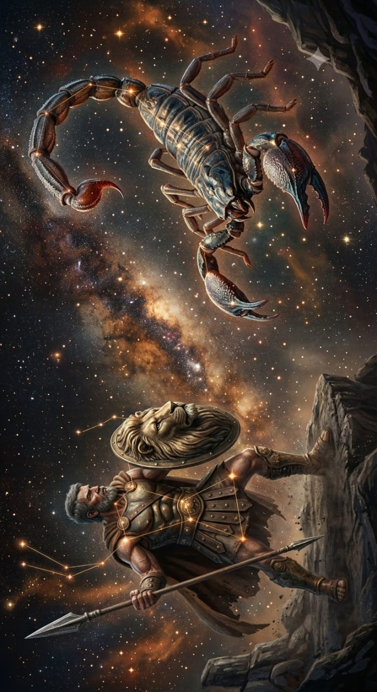

Les hommes racontent des histoires sur moi pour se rassurer la nuit. Ils parlent de ma taille, de ma force, de mes exploits. La vérité est que je ne suis pas une légende. Je suis ce qui arrive quand la nature décide de créer un prédateur sans limite.
Je suis né pour chasser, pas pour survivre ou adorer des dieux capricieux. Pour moi chasser c'est respirer, chasser c'est penser, chasser c'est être.
Les forêts se taisaient quand je marchais. Les bêtes fuyaient avant même de me voir. Même la mer me laissait passer. Oui, la mer. Je porte le sang de Poséidon en moi. Je marchais sur les vagues comme d'autres marchent sur la terre. Aucune créature ne m'aurait fait vaciller. C'était ce que je croyais avant de la rencontrer.
Artémis. Déesse de la chasse. Elle ne tremblait pas, elle je détournait pas les yeux, elle ne fuyait pas. Et elle chassait, comme moi. Enfin quelque chose digne de mon attention, je me suis dit.
Nous n'avons pas parlé d'amour, ce mot est trop faible. Nous avons partagé la traque, le sang chaud sur la peau, les trophées de chasse. Je ne voulais pas la conquérir et pour une fois dans mon existence, j'ai cessé d'être le prédateur. Je me suis laissé à la merci de mes sentiments et c'est ce qui a causé ma perte
Je l'ai senti avant de le voir, comme un piège invisible dans une forêt obscure. Ce jour-là la mer était calme. Je marchais loin de la terre, l'eau frappait contre mes jambes, docile et calme. Je ne chassais pas, je m'étais attendri. Je n'étais plus aux aguets. J'ai baissé ma garde et c'était là mon erreur.
Je ne l'ai pas vu venir, cette petite silhouette au loin qui tendait son arc. Je ne l'ai pas entendu tendre son arc, je n'ai pas entendu la flèche partir mais je l'ai senti. Dans ma chair, dans mon cœur. Même moi je n'aurais pas fait mieux.
Je suis tombé et cette mer sur laquelle je pouvais marcher s'est refermée sur moi. Dans mon agonie j'ai compris ce qui venait de m'arriver. J'ai compris, qui avait réussi l'exploit d'éliminer le plus fort des chasseurs. Elle, Artémis, l'incarnation de la chasse. C'était cruel mais digne d'elle. Les dieux ne supportaient pas de partager leur place, encore moins avec des mortels.
Ils diront que j'ai été trompé, qu'une déesse s'est jouée de moi. Ils auront raison. Mais ce n'est pas ça l'histoire. Et même mort je refuse de disparaître. Regardez le ciel, je suis encore là, debout, toujours en chasse.
Ces trois étoiles alignées dans le ciel l'EST de la République Démocratique du Congo _ Orion